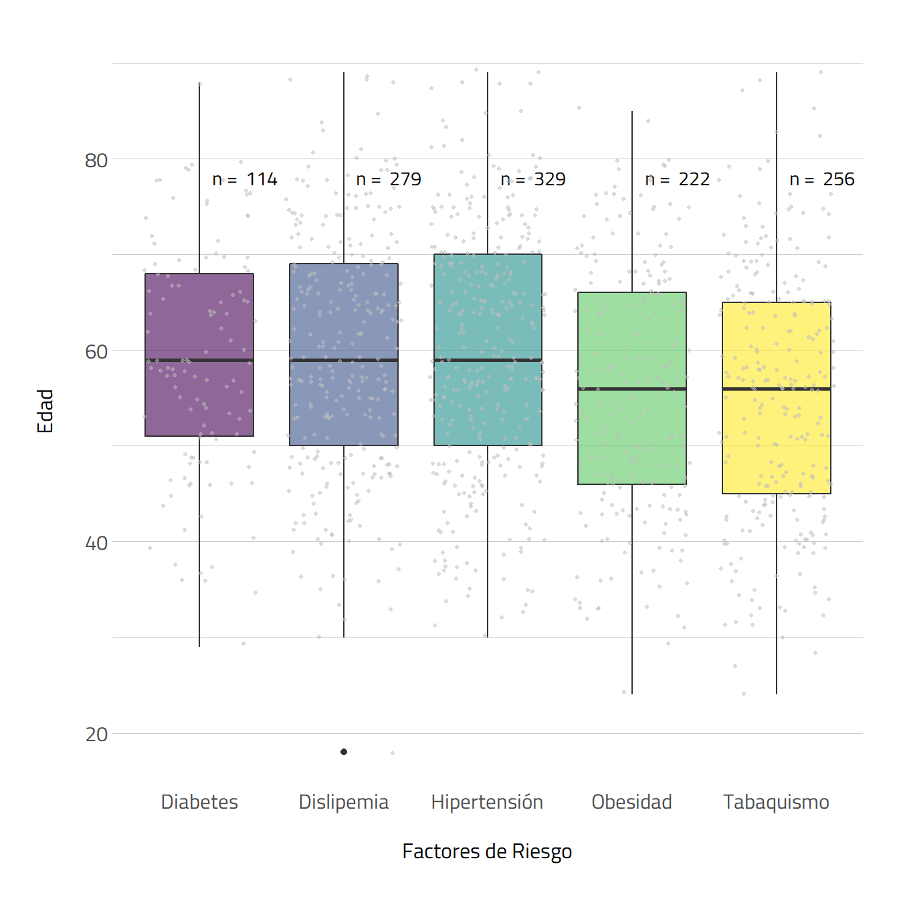
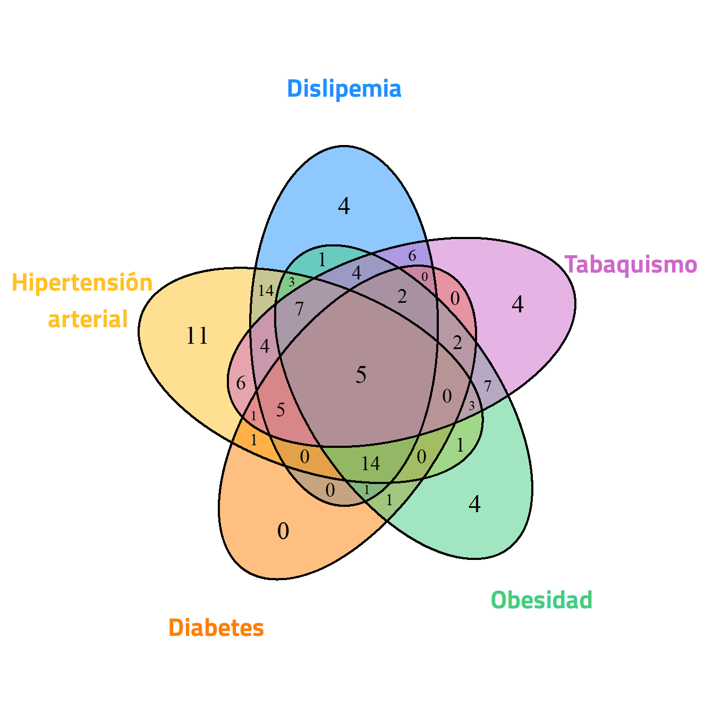
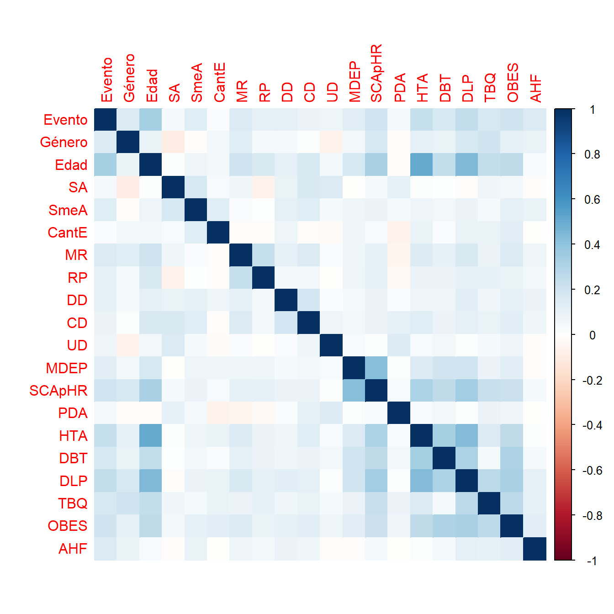
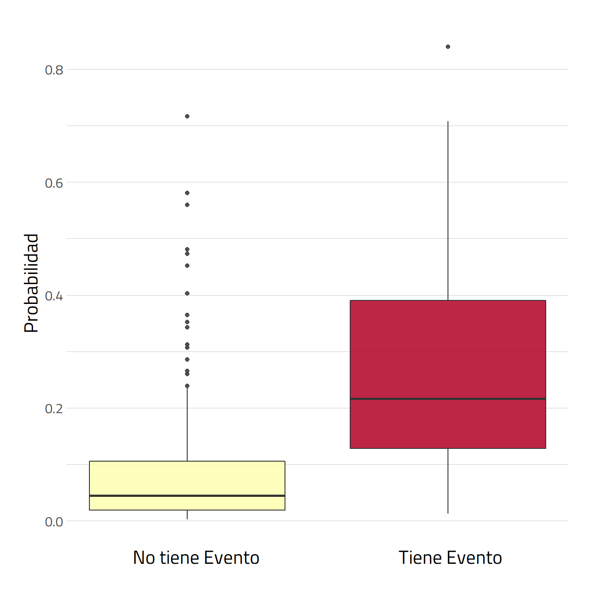
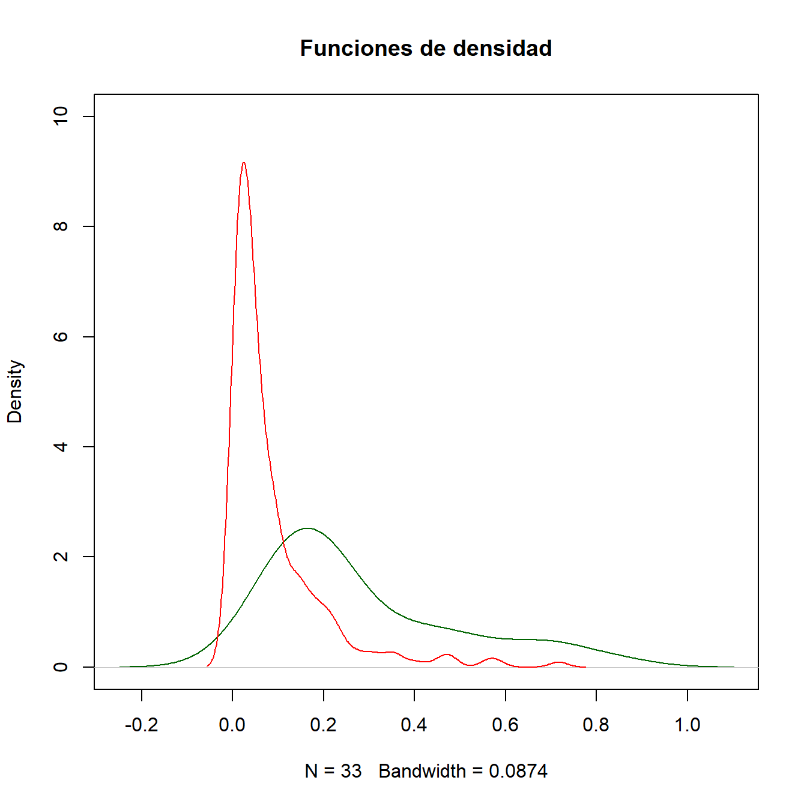
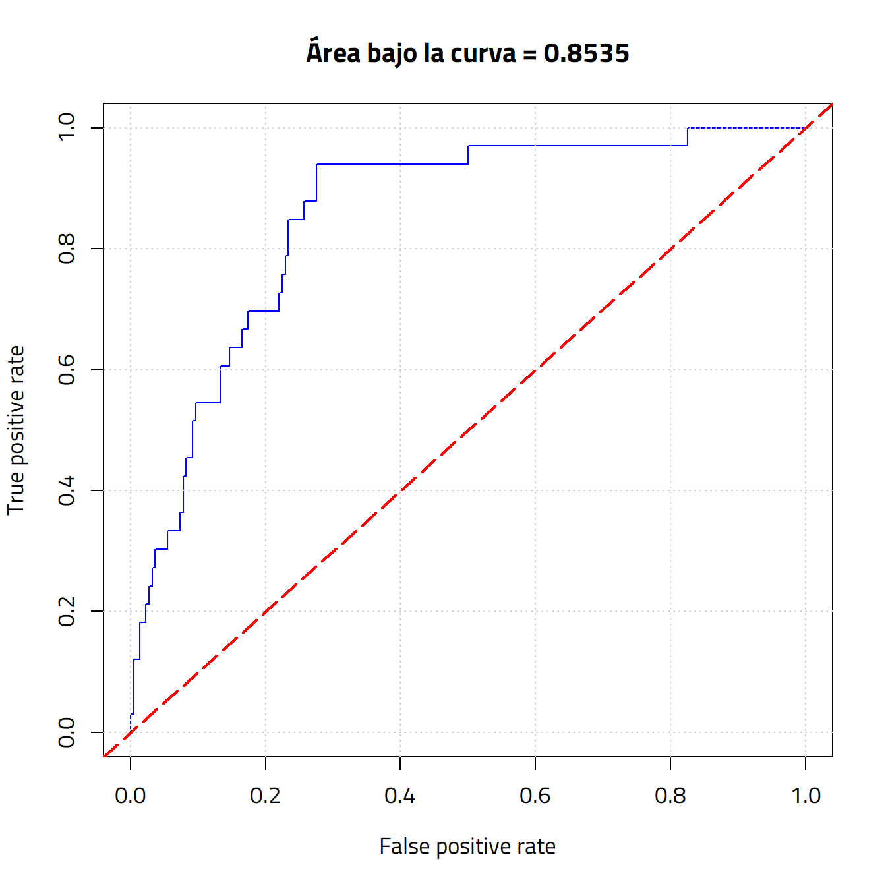

Análisis de datos para predecir eventos cardíacos
Un informe hecho por Braian Rios, Juan Giorgio y Miguel Perez para la Universidad Austral
Análisis de datos para predecir eventos cardíacos
El siguiente informe se ha realizado con el fin de facilitarle al servicio de cardiología de un hospital universitario la decisión de internar o no por problemas coronarios a un paciente que ingresa a la guardia.
Se trabajó sobre la información de un dataset de 1002 pacientes que fueron atendidos en guardia. Algunos fueron internados y a otros se los hizo esperar (información correspondiente a la columna “Evento”). Antes de tomar la decisión, se les preguntó la información contenida en las demás columnas. Los datos se encontraban completos y no realizamos ninguna modificación sobre ellos.
En el siguiente apartado, vamos a analizar los datos a partir de una serie de enunciados, que nos permitirán realizar gráficos que reúnen información necesaria para sacar conclusiones más profundas. Además, el análisis se basó en dos criterios provenientes del documento O’Donnell, C. J., & Elosua, R. (2008). Factores de riesgo cardiovascular, para seleccionar los factores de riesgo y los rangos de edades según fue requerido por cada enunciado.
El primer enunciado facilita realizar el filtro más básico que puede ser de interés para la medicina, pues muestra si sobre alguno de los dos géneros se hacen más patentes Enfermedades Cardiovasculares (ECV) o es igual para los dos. A su vez, se divide en rangos de edades para poder concluir si a partir de cierto rango son más frecuentes las ECV.
El gráfico es interactivo y contiene datos que son revelados al tocar un area del circulo.
Se puede observar que para el rango de edades más tempranas la cantidad de enfermos es muy baja en los hombres y llegando a ser nula en las mujeres.
La mayoría de los pacientes se encuentran en el rango medio de edades para ambos géneros.
En el rango de edades avanzadas las mujeres presentan un mayor volumen con respecto a los hombres.
En este apartado, se analizaron los casos en que pacientes poseían síntomas, observando la cantidad de ellos, por edades, que padecieron o no la enfermedad.
Se puede notar que la cantidad pacientes que padecieron la enfermedad es baja con respecto aquellos que si la tuvieron. Además, se puede apreciar que los pacientes más afectados por la misma entran en un rango entre los 47 y 80 años.
El siguiente gráfico consiste en diagramas de cajas que resumen cómo se distribuyen los pacientes por cada factor de riesgo según su edad. El mismo se compone de varios elementos:

Considerando la información del gráfico se concluye en lo siguiente:
Existen dos grupos de mediana de edad. El primero consiste en los factores de riesgo Diabetes, Dislipemia e Hipertensión, los cuales rondan en una mediana de 59 a 60 años. El segundo grupo, formado por Obesidad y Tabaquismo, ronda en una mediana de 55 a 56 años. En consecuencia, el primer grupo contiene pacientes con edades ligeramente más avanzadas que el segundo grupo.
El factor con mayor cantidad de pacientes es el de hipertensión, y el menor es el de diabetes.
Como punto particular, hay una sola persona con dislipemia con 18 años (indicado en el grafico como un punto negro sobresaliente sobre el eje de Dislipemia).
El siguiente gráfico nos muestra, según cada factor de riesgo, la cantidad de pacientes que presentaron un episodio. También, representadas en las intersecciones, podemos observar el numero de pacientes con más de un factor.

Analizando las áreas e intersecciones, se puede observar lo siguiente:
En el siguiente apartado se llevará a cabo la elaboración de un predictor, que responderá si un paciente ingresado por el usuario presenta o no un evento cardíaco, con un porcentaje de precisión que se calculará más adelante.
Consideramos a la columna Evento como una variable dependiente de otras columnas (consideradas variables independientes), cuya elección se basará sobre lo analizado en los anteriores enunciados y un estudio de correlación de los datos.
Sea el siguiente gráfico de correlación:  Resultan como variables independientes con mayor correlación a la variable dependiente Evento las siguientes:
OBES - HTA - DLP - TBQ - AHF - Edad - Género - SCApHR - SmeA - DBT
El método Stepwise es un grupo de algoritmos que tienen como objetivo automatizar la selección de variables en un modelo. Realizando una selección hacia atrás (denominado backward) el método indica las siguientes variables:
Género - Edad - SmeA - MR - UD - MDEP - DBT - TBQ - OBES - AHF
A partir del previo análisis de los datos, con los criterios surgidos de la bibliografía consultada, un estudio de correlación de los datos, mediante un gráfico, y el método ‘stepwise’, concluimos en la selección de las siguientes variables que participarán de la construcción del modelo de predicción:
Debido a que deseamos realizar una predicción sobre el resultado de una variable que se puede dividir en dos categorías (posee o no evento, enfermo/sano) resulta conveniente utilizar regresión logística para la construcción del modelo de predicción. A su vez, dicha construcción se realiza sobre el 75% de los datos de los pacientes, a modo de entrenamiento del modelo.
Evaluaremos el modelo sobre el 25% restante de haber divido el dataset anteriormente. 
La curva AUROC evalúa la precisión de un predictor evaluando la ocurrencia de falsos positivos. Cuanto más alto el valor AUC es, mejor es el predictor.  La etiqueta “Área bajo la curva” sobre el gráfico indica que el predictor tiene una probabilidad del 85% de que el modelo será capaz de distinguir entre positivos y negativos.